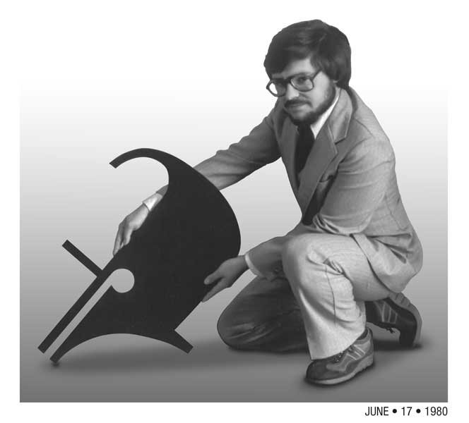

Thomas Moline Resume
A Lifetime in Graphic Arts
Summary
Now looking for clients for freelance work. I'm looking for creative challenges and long-term projects.
Graphic Artist
TOLOMATIC, Inc.; Jul 1994 – Present (28 yrs +)
Background: Headquartered in Hamel, Minnesota, Tolomatic has over 250 employees with offices in Germany, Mexico, and China
Responsibilities: Create and maintain documents for the promotion, education, and maintenance of state-of-the-art industrial components
Work duties new items: Design, write, illustrate, photograph, and videotape for print, video, and web documents
Work duties existing content: Keep sales enablement app and website (US & DE) content updated, including page content and 882 documents
Skills: Photography, Videography, 3D illustration & animation; software including: Adobe After Effects, Illustrator, InDesign, Photoshop, Premier, Blender, Microsoft Excel, PowerPoint, Word, Solidworks Photoview 360
Graphic Designer
JODEE KULP GRAPHIC ARTS SERVICES; Nov 1, 1985 – Jan 1, 1994 (8 yrs 3 mos)
Background: A 15-person art studio with government, medical, retail and industrial accounts During this time successful companies and employees made the transition from analog graphic arts processes to digital production. Now reorganized as Jodee Kulp Digital Design
Responsibilities: Creative work for print advertising, catalogs, brochures, and desktop publishing
Analog Skills: Marker renderings, keyline, graphic camera and illustrations
Computer Skills:

Artist
GRAPHIC WORLD Mar 1, 1980 – Nov 1, 1985 (5 yrs 9 mos)
Background: 30-person print shop, retail, industrial, and service accounts (Corporation now dissolved)
Responsibilities: Customer consultation, job trafficking, layout, and print production Skills: Layout, marker rendering, type mark-up, keyline, illustration and logo design
Major projects: Scheduled and produced typography/artwork for 1983 Minnesota State Income Tax Forms and Schedules Designed award-winning Christmas card for the Hyatt Hotel Minneapolis. Full-color illustrations, logos, and menu designs for Radisson Hotels Restaurants International
Art Director
NOTCH ADVERTISING; Nov 1, 1978 – Feb 1, 1980 (1 yr 4 mos)
Background: An eight-person advertising agency owned by Bert Notch with a variety of industrial and retail accounts (Company dissolved March 1980)
Responsibilities: Creative work for print advertising, newspaper, and narrated slide shows Work Duties: Conceptualizing, art direction, designing, layouts, and storyboards
Skills: Marker renderings, type mark-up, illustration, keylining, logo design, and graphic camera operation
Camera Operator
SCARP/HEILMAN COMPANY; Jul 1, 1978 – Nov 1, 1978 (5 mos)
Background: Scarp/Heilman company employed about 30 people in the printing of graphics on packaging.(Company purchased by Container Graphics Corp. 1983)
Responsibilities: As one of two on the prepress team I was responsible for camera work, layout, stripping and opaquing in preparation for flexographic printing.
Art Director
PROMOTIONAL DYNAMICS CORPORATION; Jul 1, 1977 – May 1, 1978 (11 mos)
Background: Three person advertising agency. Accounts included Rosedale Chevrolet, restaurants, and retail manufacturers. (Corporation filed for bankruptcy May 1978)
Responsibilities: Design and creation of print and television ads. Required skills: Marker renderings & layouts, type mark-up, keyline, illustration, logo design
Education
North Hennepin Community College Associate, Applied Science; Commercial Art/ Graphic Design